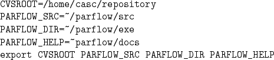
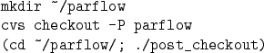

This section assumes that the developer is working on the workstation cluster at LLNL. No procedures have yet been devised for developers working elsewhere (there currently are no such developers).
The repository (central location for all of the source) is located in /home/casc/repository/parflow. Online documentation, WWW information, and data for many runs, are all located in a parflow account (directory parflow) on the local workstation cluster. Developers work on their own local versions of the code, which gets ``checked'' in and out of the repository as changes are made. The source code control system that is being used is the CVS system. The following steps describe how to check out a ``clean'' version of the code.

You also need to add $PARFLOW_DIR/bin to your $PATH environment variable.
The variable CVSROOT specifies the location of the parflow
repository and other CVS repositories.
The variable PARFLOW_DIR specifies the location of
the installed version of .
To allow more than one binary version of the code to be installed in
your directory at a time, set
This will, for example,
install Sun binaries in /parflow/exe.SunOS
and SGI binaries in /parflow/exe.IRIX.
PARFLOW_SRC is the location of the source code for
and affiliated tools.
PARFLOW_HELP is the location of the online help files.
We will use the /parflow directory as the root directory for
building in this manual; you may use a different directory
if you wish.

This creates a local directory tree from the sources in the repository.